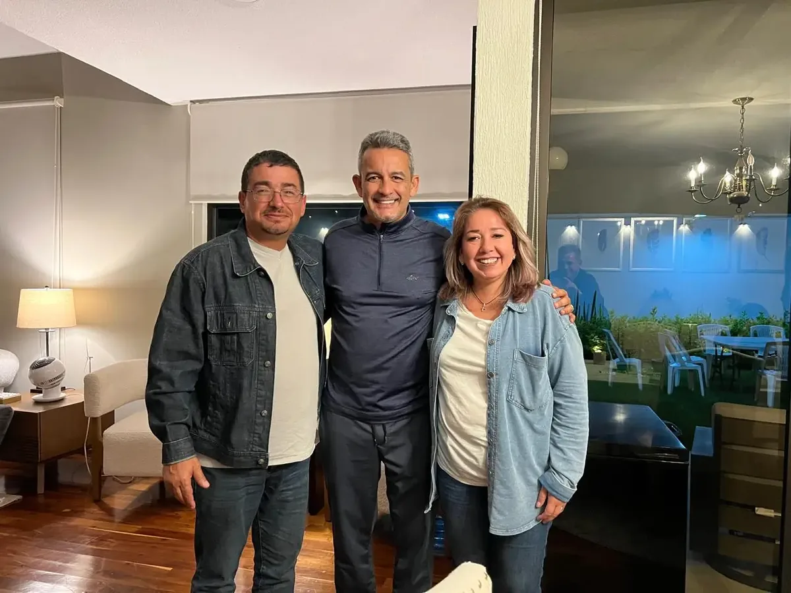
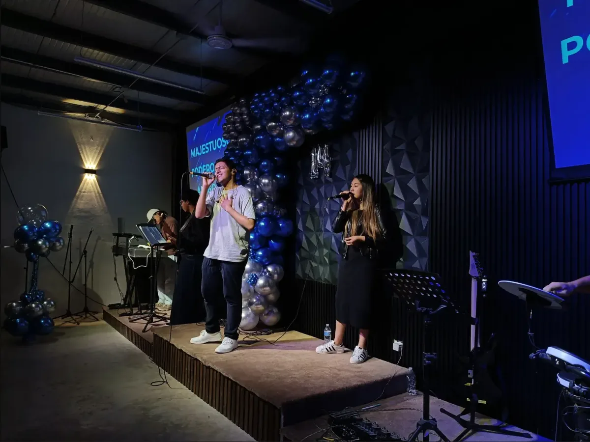
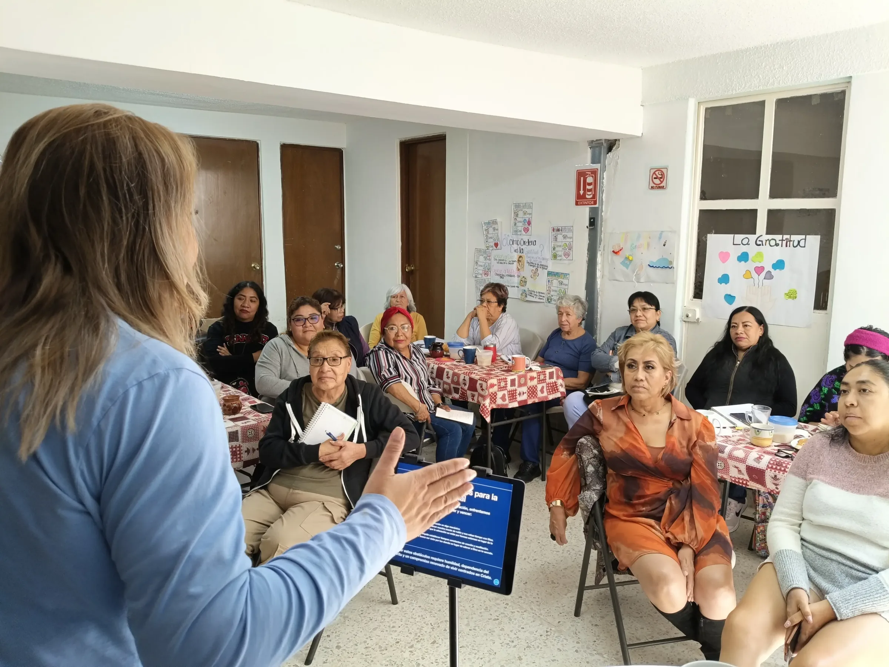
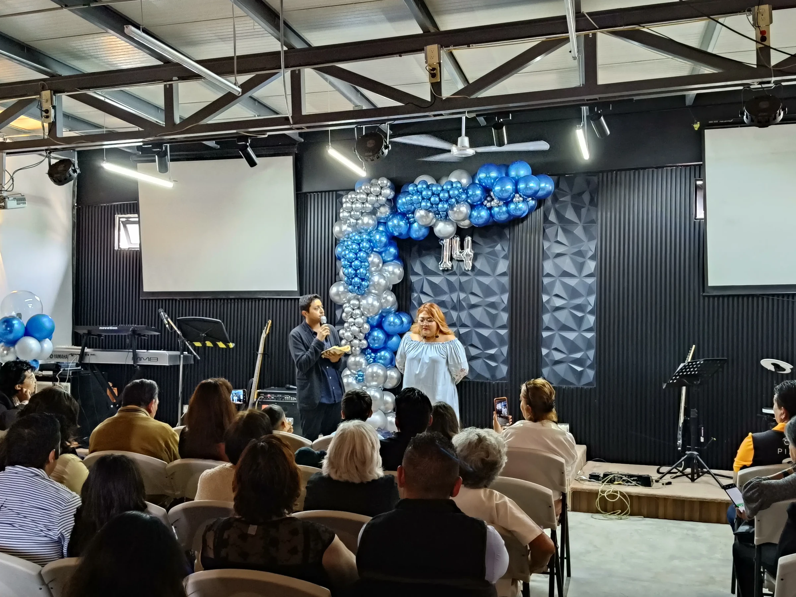

<!-- banner-fb (1280x960) -->
<picture>
  <source type="image/avif" srcset="banner-fb-480.avif 480w, banner-fb-768.avif 768w, banner-fb-1200.avif 1200w, banner-fb-1280.avif 1280w" sizes="(max-width: 768px) 100vw, 800px">
  <source type="image/webp" srcset="banner-fb-480.webp 480w, banner-fb-768.webp 768w, banner-fb-1200.webp 1200w, banner-fb-1280.webp 1280w" sizes="(max-width: 768px) 100vw, 800px">
  
</picture>

<!-- banner-ig (1280x960) -->
<picture>
  <source type="image/avif" srcset="banner-ig-480.avif 480w, banner-ig-768.avif 768w, banner-ig-1200.avif 1200w, banner-ig-1280.avif 1280w" sizes="(max-width: 768px) 100vw, 800px">
  <source type="image/webp" srcset="banner-ig-480.webp 480w, banner-ig-768.webp 768w, banner-ig-1200.webp 1200w, banner-ig-1280.webp 1280w" sizes="(max-width: 768px) 100vw, 800px">
  
</picture>

<!-- banner-tt (1080x1440) -->
<picture>
  <source type="image/avif" srcset="banner-tt-480.avif 480w, banner-tt-768.avif 768w, banner-tt-1080.avif 1080w" sizes="(max-width: 768px) 100vw, 800px">
  <source type="image/webp" srcset="banner-tt-480.webp 480w, banner-tt-768.webp 768w, banner-tt-1080.webp 1080w" sizes="(max-width: 768px) 100vw, 800px">
  
</picture>

<!-- banner-wa (1323x992) -->
<picture>
  <source type="image/avif" srcset="banner-wa-480.avif 480w, banner-wa-768.avif 768w, banner-wa-1200.avif 1200w, banner-wa-1323.avif 1323w" sizes="(max-width: 768px) 100vw, 800px">
  <source type="image/webp" srcset="banner-wa-480.webp 480w, banner-wa-768.webp 768w, banner-wa-1200.webp 1200w, banner-wa-1323.webp 1323w" sizes="(max-width: 768px) 100vw, 800px">
  
</picture>

<!-- foto-actividades (4096x3072) -->
<picture>
  <source type="image/avif" srcset="foto-actividades-480.avif 480w, foto-actividades-768.avif 768w, foto-actividades-1200.avif 1200w, foto-actividades-1600.avif 1600w, foto-actividades-2400.avif 2400w, foto-actividades-4096.avif 4096w" sizes="(max-width: 768px) 100vw, 800px">
  <source type="image/webp" srcset="foto-actividades-480.webp 480w, foto-actividades-768.webp 768w, foto-actividades-1200.webp 1200w, foto-actividades-1600.webp 1600w, foto-actividades-2400.webp 2400w, foto-actividades-4096.webp 4096w" sizes="(max-width: 768px) 100vw, 800px">
  
</picture>

<!-- foto-envivo (4096x3072) -->
<picture>
  <source type="image/avif" srcset="foto-envivo-480.avif 480w, foto-envivo-768.avif 768w, foto-envivo-1200.avif 1200w, foto-envivo-1600.avif 1600w, foto-envivo-2400.avif 2400w, foto-envivo-4096.avif 4096w" sizes="(max-width: 768px) 100vw, 800px">
  <source type="image/webp" srcset="foto-envivo-480.webp 480w, foto-envivo-768.webp 768w, foto-envivo-1200.webp 1200w, foto-envivo-1600.webp 1600w, foto-envivo-2400.webp 2400w, foto-envivo-4096.webp 4096w" sizes="(max-width: 768px) 100vw, 800px">
  
</picture>

<!-- foto-ofrendas (1080x1080) -->
<picture>
  <source type="image/avif" srcset="foto-ofrendas-480.avif 480w, foto-ofrendas-768.avif 768w, foto-ofrendas-1080.avif 1080w" sizes="(max-width: 768px) 100vw, 800px">
  <source type="image/webp" srcset="foto-ofrendas-480.webp 480w, foto-ofrendas-768.webp 768w, foto-ofrendas-1080.webp 1080w" sizes="(max-width: 768px) 100vw, 800px">
  
</picture>

<!-- foto-pastor1 (1321x991) -->
<picture>
  <source type="image/avif" srcset="foto-pastor1-480.avif 480w, foto-pastor1-768.avif 768w, foto-pastor1-1200.avif 1200w, foto-pastor1-1321.avif 1321w" sizes="(max-width: 768px) 100vw, 800px">
  <source type="image/webp" srcset="foto-pastor1-480.webp 480w, foto-pastor1-768.webp 768w, foto-pastor1-1200.webp 1200w, foto-pastor1-1321.webp 1321w" sizes="(max-width: 768px) 100vw, 800px">
  
</picture>

<!-- foto-pastor2 (1321x991) -->
<picture>
  <source type="image/avif" srcset="foto-pastor2-480.avif 480w, foto-pastor2-768.avif 768w, foto-pastor2-1200.avif 1200w, foto-pastor2-1321.avif 1321w" sizes="(max-width: 768px) 100vw, 800px">
  <source type="image/webp" srcset="foto-pastor2-480.webp 480w, foto-pastor2-768.webp 768w, foto-pastor2-1200.webp 1200w, foto-pastor2-1321.webp 1321w" sizes="(max-width: 768px) 100vw, 800px">
  
</picture>
